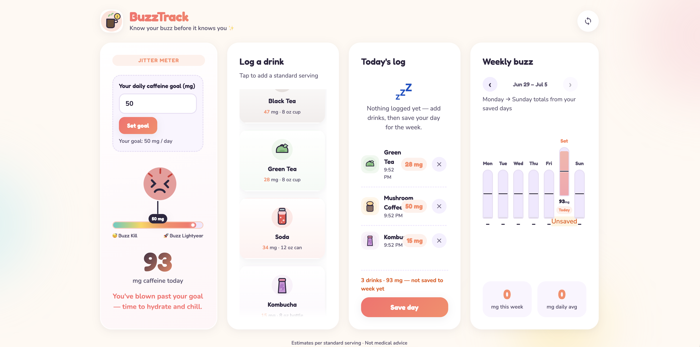
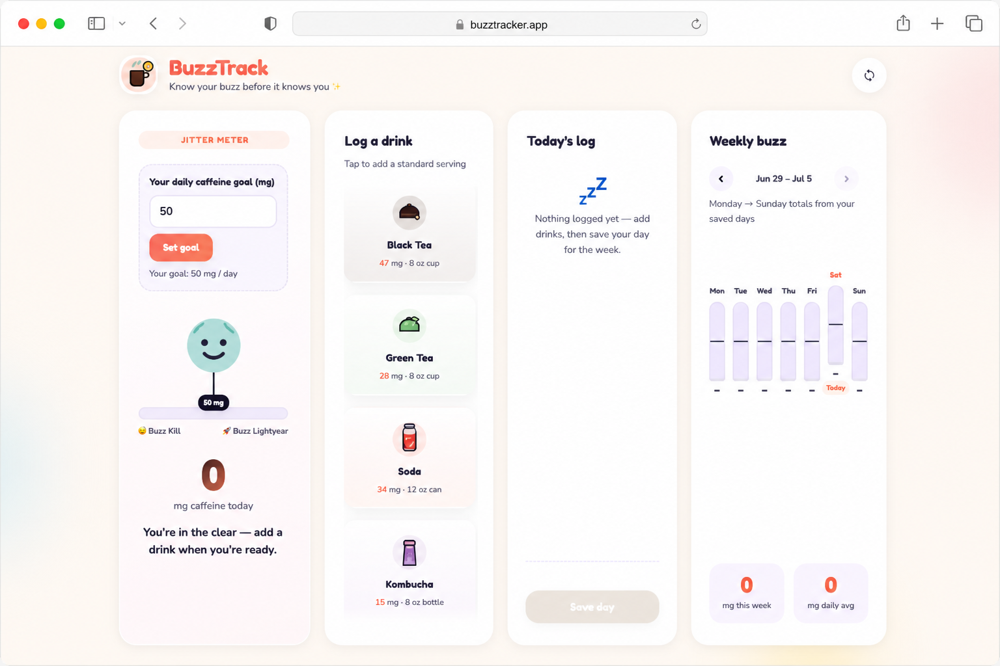
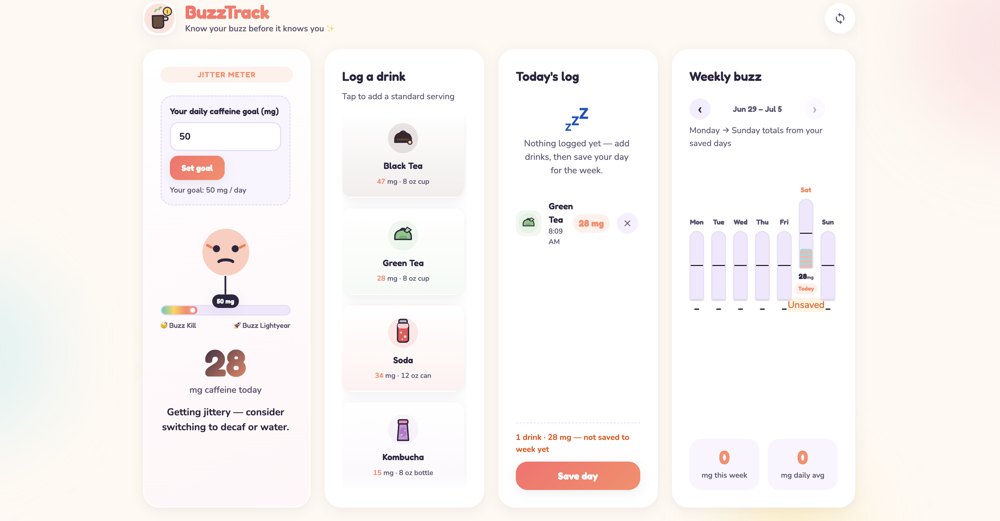
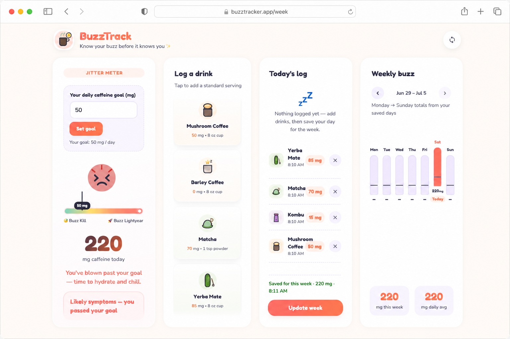

Caffeine data analysis
Buzz
Tracker
A simple, fun, and easy to use caffeine tracker to track your regular intake.
View live app
Project details
At a glance
Context
Overview
Buzz Tracker is a fun, interactive app that helps you hit your personal energy goals by effortlessly logging your caffeine intake across diverse drink types like yerba mate, mushroom coffee, tea, etc.
Challenge
The challenge
It's easy to lose track of one's caffeine intake and stay on track, especially if you're addicted to the ol' cup of Joe. Users need a fun and accessible way to stay in check when meeting their caffeine goals.
How it was built
Process



Response
The solution
Buzz Tracker provides a vibrant, interactive platform where users can log their daily caffeine intake across unique beverages like yerba mate, mushroom coffee, and artisanal drinks. By transforming personalized consumption goals into an engaging habit, the app guides users toward their ideal energy levels without the friction of traditional tracking.
Highlights
Key features
- Set caffeine goals and measure progress
- Select from a list of 6+ common caffeine types
- Track progress daily, weekly, and annually
Walkthrough
Demo
Results
Outcomes
Users now have a fun, engaging, and simple way to track their caffeine intake. The engaging interface encourages user to stick to their caffeine goals, by looking forward to logging their caffeine amounts.
Looking ahead
Reflection
Future versions will introduce account registration for secure data persistence, alongside a caffeine API integration that lets users search and log entries matching their exact drinking habits. I also plan to roll out collaborative gamification features. By letting users track progress against their social networks, we can leverage community accountability to help everyone reach their personal caffeine goals.